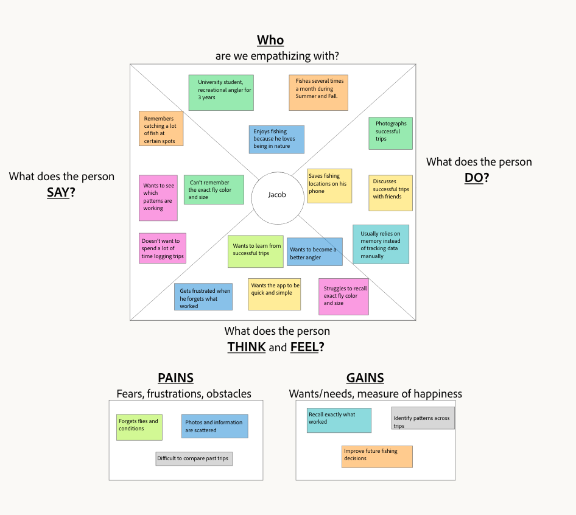
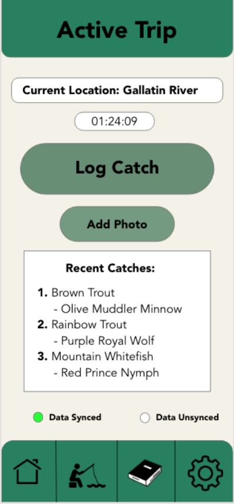
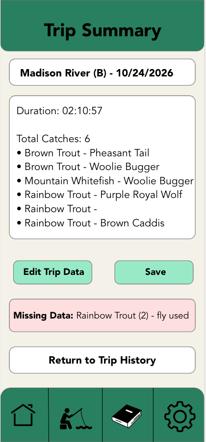
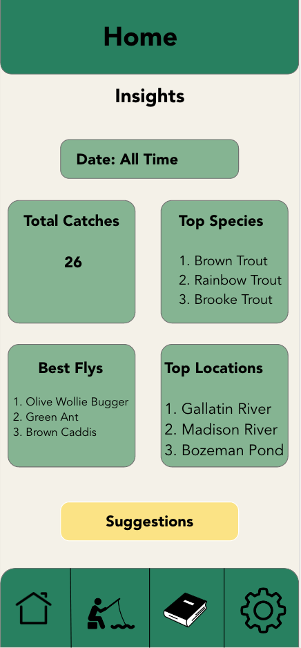
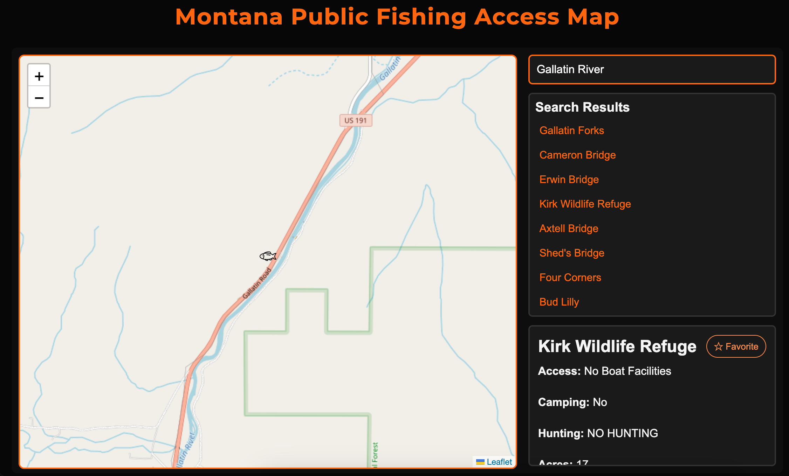

I design and build software people can
actually use.
I'm a Computer Science student at Montana State University focused
on UX/UI design and creating intuitive, user-centered digital
experiences. I enjoy understanding user needs and turning them
into practical, thoughtful designs.
I'm a Computer Science student at Montana State University with an
interest in technology, problem-solving, and building things. I've
always enjoyed taking on challenges, figuring out how things work,
and creating solutions to problems. Through my education, I've
developed an interest in how technology can be designed to better
serve the people using it.
I believe good UX design starts with understanding the people
behind the problem. I enjoy learning about users' needs,
identifying areas of frustration, and turning those findings into
practical design solutions. My approach focuses on creating
experiences that are intuitive, accessible, and easy to use
without sacrificing functionality.
Moving forward, I want to continue developing my skills in UX
research, UI design, and prototyping. I'm especially interested in
projects that combine problem-solving, creativity, and technology
to create useful products and meaningful experiences.
Skills and experience
UX research
User Interviews
User Research
Empathy Mapping
User Personas
Problem Identification
Usability Testing
Usability Heuristics
Design and prototyping
Figma
High-Fidelity Prototypes
Sketching
Wireframes
Heuristic evaluation
User-centered Design
Technical
HTML/CSS
JavaScript
Java
Python
SQL
React
Experience
August 2024 - Present
Deli Clerk, Albertsons
Work directly with customers to understand their requests,
answer questions, and provide products that meet their needs.
Developed communication, problem-solving, and customer service
skills through daily interactions in a fast-paced environment.
Expected Graduation: Fall 2026
Montana State University, Bachelor of Science in Computer
Science
Relevant coursework includes User Interface Design,
Human-Computer Interaction, Software Engineering, and Computer
Systems.
Key projects
Each project follows the same path: the problem, the tools, how I
found a solution, and what I learned.
UX design course project
Smart Fishing App & Advisor
A mobile fishing application designed to help anglers record
fishing trips, organize their fishing history, and gain insights
from their past experiences. The project focused on
understanding common frustrations anglers face when tracking
fishing information and designing a solution that makes logging
trips easier and more useful.
My role
UX Researcher and UI Designer
Team
2 person project
Timeline
16 weeks
Tools
Adobe XD, Figma, Coggle, Google Forms
The problem
Anglers often struggle to consistently record details about
their fishing trips. Information such as fishing locations,
weather conditions, successful flies or lures, and catches is
frequently scattered across photos, notes, or memory. This makes
it difficult to look back at previous trips, recognize patterns,
and remember what worked in different conditions. The goal was
to design an application that makes recording and accessing this
information easier without making the process feel like a chore.
My process
Empathize - Understanding Anglers
I interviewed five people to better understand their fishing
habits and frustrations. This included three recreational
anglers, one fly shop employee, and one fishing guide. I
used these conversations to identify common challenges with
recording trips and remembering successful fishing
techniques. One important finding was that anglers wanted to
keep track of what worked, but logging information could
become time-consuming.

Empathy map highlighting the user's behaviors, thoughts,
frustrations, and goals to identify opportunities for
improving the fishing experience.
Define
Based on my research, I identified three main priorities:
- Quick and convenient fishing trip logging.
- An organized history of previous fishing trips.
- Personalized insights that help anglers learn from past
experiences.
I developed a user persona representing a recreational
Montana fly angler to help guide design decisions and keep
the project focused on actual user needs.
Ideate
I brainstormed features and organized ideas into categories,
including trip logging, fishing history, fishing insights,
conditions, convenience, and sharing.
I explored different layouts and interactions through
sketches and low-fidelity wireframes. I ultimately
prioritized features that reduced the effort required to
record a trip while still capturing useful information.
Mind map from our ideation session. We grouped ideas into
six branches, then chose three priority features: quick
trip logging, organized fishing history, and personalized
insights.
Prototype
I created multiple low-fidelity screens before developing a
high-fidelity mobile prototype in Adobe XD. The final design
included:
Trip logging with species, fly or lure, length, and weight.
- An active trip screen with a timer and catch count.
- Trip summaries and fishing history.
- A fly box for favorites and recently used flies.
- Voice logging to make recording information more
convenient.
I focused on maintaining consistent navigation and creating
an interface that anglers could use without unnecessary
steps.

Active Trip

Trip Summary

Home/Insights
Test
Currently in progress.
Usability heuristics I applied
Visibility of system statusThe active trip screen displays a timer and catch count so
users can see their current progress.
Match between system and real worldThe application uses familiar fishing terminology and
organizes information around trips, catches, species, and
flies or lures.
Error preventionRequired fishing information and missing-data indicators
help users identify incomplete trip records.
Outcome and what I learned
This project helped me understand the importance of conducting
user research before beginning the design process. Interviewing
anglers revealed frustrations that I might not have considered
on my own. I learned how to translate those findings into design
priorities, develop prototypes, and apply usability principles
to create a more intuitive experience. If I continued developing
the project, I would focus on usability testing with anglers and
refining the design based on their feedback.
Course and Personal Project
Interactive Montana Fishing Map
The Montana Public Fishing Access Map is an interactive web
application designed to help anglers find and explore public
fishing access locations throughout Montana. Built using React
and Leaflet, the application brings together fishing access
information published by Montana Fish, Wildlife & Parks (FWP)
and presents it through an interactive map.
Users can search for specific rivers, lakes, and ponds to find
associated public fishing access locations. Selecting a location
automatically zooms the map to that spot and displays important
information, including access details, camping availability,
hunting restrictions, and other relevant information. Users can
also save favorites and add personal notes to individual
locations, making it easier to organize and remember their
fishing spots.
My role
UX/UI Designer and Developer and Full-stack Developer
Finding public fishing access information throughout Montana can
be difficult when information is spread across different
websites and resources. Anglers often have to search for
individual rivers, lakes, and ponds and navigate through
multiple pages to find nearby access locations and important
details. This makes discovering new fishing spots and comparing
available access more time-consuming than necessary.
I wanted to create a centralized application that would make
fishing access information easier to find and understand. The
goal was to give anglers an interactive map where they could
search waterways, explore access locations, view important
details, and keep personal notes about individual spots.
My process
Research and problem identification
I started by identifying the difficulty of finding and
organizing public fishing access information throughout
Montana. I explored the information available through the
Montana Fish, Wildlife & Parks website and recognized an
opportunity to make that information easier to navigate.
I focused on bringing the available fishing access
information into one centralized application instead of
requiring users to search through multiple pages. I also
identified the importance of organizing locations by rivers,
lakes, and ponds so users could find relevant access points
based on where they wanted to fish.

Home screen for interactive fishing map with all
individual spots connected to their corresponding river.
Design and information organization
I designed the interface around an interactive map, making
geographic exploration the primary way users discover
fishing access locations. I used a two-panel layout, with
the map taking up most of the screen and a separate panel
displaying search results and selected location information.
I chose an orange-and-black color scheme to create a
consistent visual identity and make important interactive
elements stand out. I organized location details into
individual information panels so users could quickly find
relevant information without navigating away from the map.
I also incorporated search results, location selection,
favorites, and personal notes to make the application more
useful for anglers.
Development and implementation
I built the application using React and Leaflet, integrating
OpenStreetMap to provide the interactive mapping
functionality. I used geographic data to display public
fishing access locations throughout Montana and connected
those locations with information published by Montana Fish,
Wildlife & Parks.
I implemented search functionality that allows users to
search for specific rivers, lakes, and ponds and retrieve
their associated fishing access locations. I also developed
interactive map markers that respond to user selection. When
a user clicks on a location, the map automatically zooms in
to that specific spot and displays its associated
information.
Additional functionality includes the ability to mark
locations as favorites and add personal notes to individual
fishing access points.
Functionality and refinement
Throughout development, I focused on making the application
straightforward to navigate and ensuring that important
fishing access information was easy to find. I organized
search results separately from the map so users could browse
locations while maintaining a view of the surrounding
geography.
I also focused on making individual locations interactive,
allowing users to select a spot, automatically zoom into it,
and view its associated details. Favorites and personal
notes provide additional ways for users to organize
locations based on their individual fishing preferences.
These features helped shape the application into more than
just a map by providing tools for discovering and organizing
fishing locations.
Usability heuristics I applied
Visibility of System StatusWhen users select a fishing access location, the map
automatically zooms into that location and displays its
associated information. This provides immediate visual
feedback and helps users understand which location they have
selected.
Recognition Rather Than RecallUsers can visually explore fishing access locations on an
interactive map rather than having to remember addresses or
search through separate webpages. Search results and
location information are also displayed directly within the
application.
User Control and FreedomUsers can search for different waterways, explore
individual access locations, and organize locations using
favorites and personal notes. This gives users flexibility
in how they discover and manage fishing spots.
Consistency and StandardsThe application uses a consistent orange-and-black color
scheme, recognizable map interactions, and organized
information panels. Consistent visual elements help users
understand how to interact with different parts of the
application.
Outcome and what I learned
This project allowed me to combine my interest in fishing,
software development, and user experience design to solve a
practical problem. I learned how important information
organization and intuitive navigation are when designing
applications that work with large amounts of geographic data.
One of the biggest takeaways was that an application can provide
valuable information but still needs to make that information
easy to access. By combining an interactive map, search
functionality, location details, favorites, and personal notes,
I created a centralized tool for anglers exploring public
fishing access throughout Montana.
If I continue developing the application, I would like to gather
feedback from other anglers and conduct usability testing to
identify areas where the interface and overall experience could
be improved.